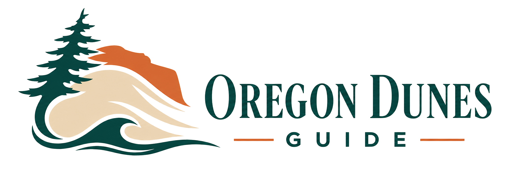

Expect wind and marine fog
Carry a wind layer even when the inland forecast looks warm.

Plan a trip ↗OREGON'S WILD COAST · 40+ MILES OF DUNES
A practical visitor guide to camping, riding, and wandering the Oregon Dunes—made for unhurried weekends and well-planned adventures.
Weather and tides are live at the dunes. Everything else links through to the detail.
START HERE
North America's largest stretch of coastal dunes is full of contrasts: wind-shaped ridges, quiet lakes, old forests, open riding areas, and working coastal towns.
This static guide keeps the essentials together, works without a framework, and can be hosted directly from this folder.
Compare developed sites, quiet forest bases, reservations, and ride-from-camp options.
Open camping guide → 02 · RIDE RESPONSIBLYLearn the personalities of Florence, Umpqua Dunes, and the southern riding network.
Open riding guide → 03 · KNOW THE TERRAINExplore staging areas, campgrounds, towns, and riding zones north to south.
Open interactive maps → 04 · BUILD YOUR TRIPTurn your dates, stay, crew, interests, rentals, and selected stops into a personalized itinerary.
Open the trip planner → 05 · EXPLORE THE COASTDiscover lakes, wildlife, hiking, photography, nearby towns, shopping, dining, and relaxed day-use stops.
Open day-use guide → 06 · KNOW BEFORE YOU GOCheck weather, tides, permits, rules, safety guidance, fuel planning, and current conditions.
Browse planning essentials →EXPLORE THE FULL GUIDE
Start with the Trip Planner, then explore the guides that match how you want to stay, ride, prepare, and experience the Oregon Dunes.
Tell us when you are going, where you want to stay, who is coming, and what sounds fun. Get a personalized plan you can save, print, and share.
PLAN YOUR STAY
RIDE READY
CHECK CONDITIONS
EXPLORE MORE
BEFORE YOU GO
Weather, fire restrictions, beach access, and wildlife closures can change. Verify official sources on the morning of your trip.
Open weather center →Carry a wind layer even when the inland forecast looks warm.
Signed boundaries and seasonal wildlife areas are non-negotiable.
Confirm requirements for every machine and operator before staging.